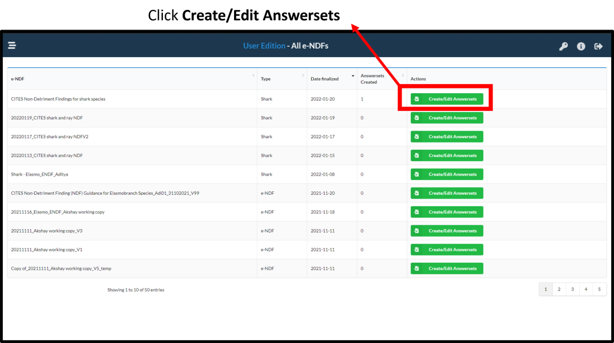
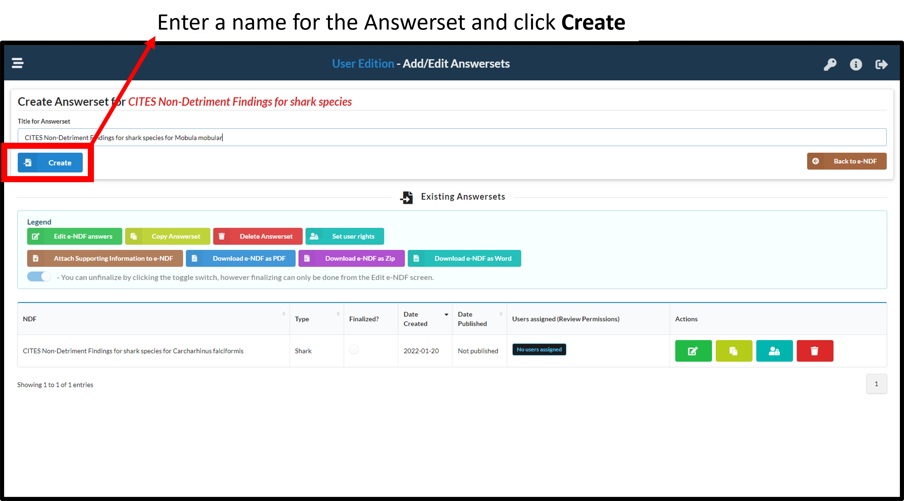
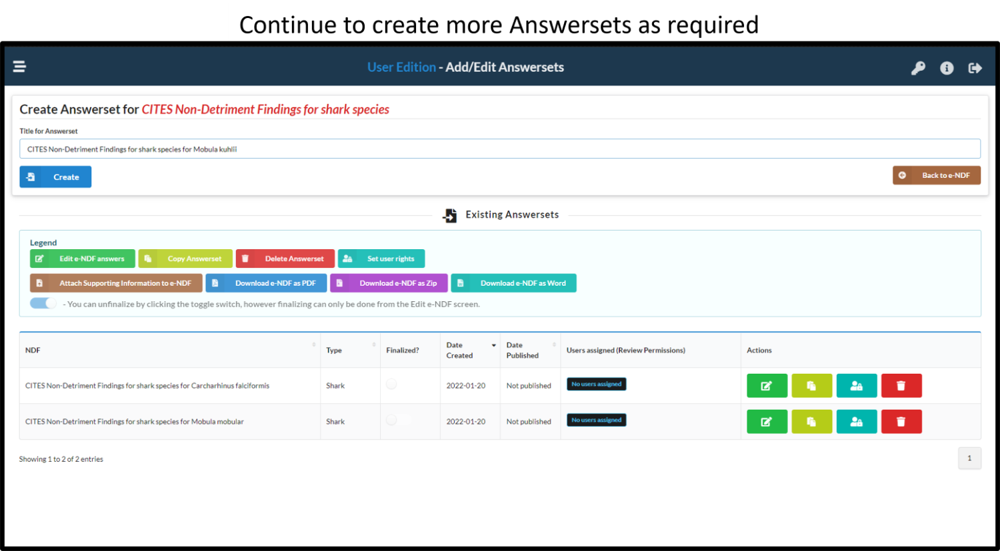

1 Starting to develop a CITES NDF
To begin an e-NDF, the NDF admin needs to initialise an Answerset. The steps involved are illustrated below.
1.1 Initialise an Answerset

1.2 Name the Answerset
Edit the name of the Answerset - ensure the name is descriptive and clear (eg. ‘NDF for silky sharks - 2022’) 
1.3 Create Answersets as needed

1.4 Next steps
Once an Answerset are created, the NDF admin can proceed with assigning users to enter data into the respective NDF.
Note:If users and usernames have not been created, the admin will first need to create users.